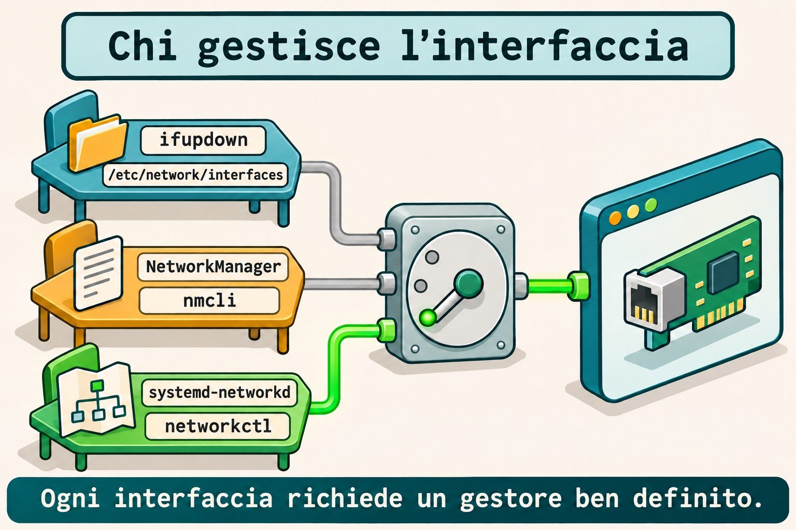
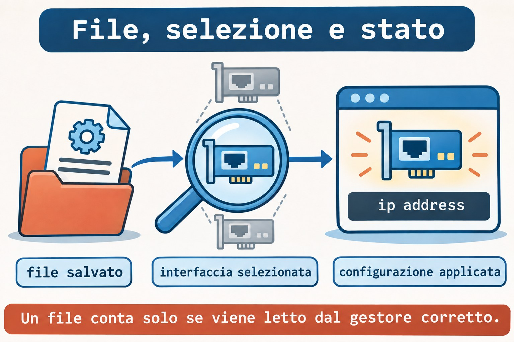
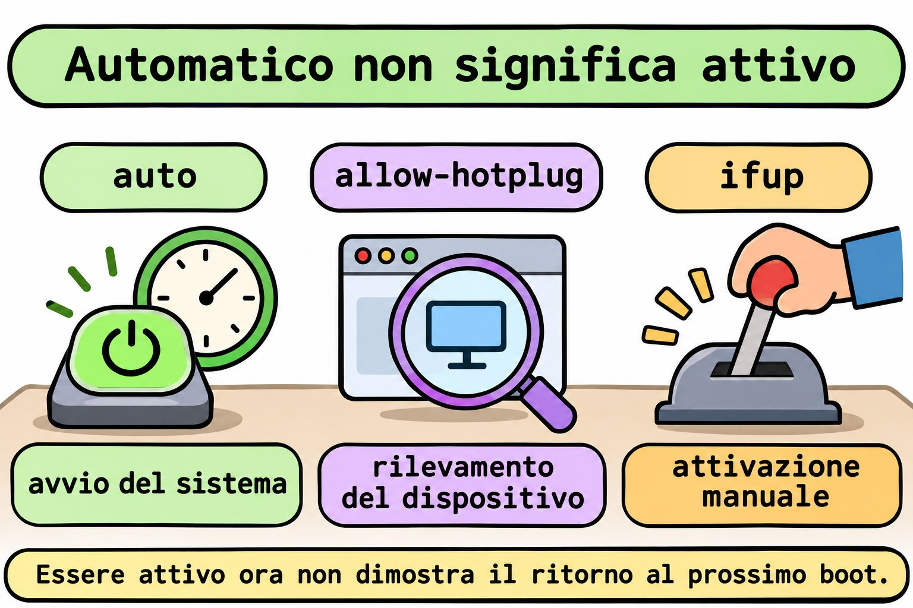

Lezione 11.3 · Rete su Debian
Su Windows Server cerchi la configurazione che amministra davvero la scheda prima di modificare un indirizzo. Su Debian, questa domanda viene prima del nome del comando: chi gestisce questa interfaccia? Nella Lezione 11.2 hai lavorato con i profili di NetworkManager; ora leggerai e applicherai una configurazione di ifupdown, confronterai i due modelli e riconoscerai i file di systemd-networkd.
Il cuore di questa lezione: scopri il responsabile dell'interfaccia, trova il file che legge e controlla lo stato applicato nel kernel. Un file corretto nel posto sbagliato non configura la rete. Il resto è approfondimento.
| Scheda | |
|---|---|
| Modulo | M11 · Rete, lezione 3 di 5 |
| Quando | Settimana 16 |
| Alla fine | Identifichi il gestore, interpreti interfaces, attivi un'interfaccia interna e confronti con NetworkManager e networkd |
| Prerequisiti | Lezioni 11.1 e 11.2; SSH, sudo, noVNC; Debian con ifupdown e Rocky con NetworkManager |
| Durata | Circa 90 minuti, più 30 minuti per ripetere senza consultare |
| Snapshot | m11a3-inicio e m11a3-fim sulle VM 201 e 202 |
1 · Riscaldamento
Rispondi senza consultare. Le soluzioni sono alla fine.
- Qual è la differenza tra profilo salvato e connessione attiva in NetworkManager?
- Un indirizzo aggiunto con
ip address adddimostra la persistenza dopo il reboot? - Prima di modificare la scheda usata da SSH, quale accesso o piano di ripristino deve essere disponibile?
2 · Perché conta
Modifichi un profilo di NetworkManager, ma Debian continua a usare un altro indirizzo. Il file sembra corretto, il comando esiste e la rete funziona. Il problema è che quell'interfaccia è sotto ifupdown; hai modificato una configurazione che non partecipa al percorso di attivazione.
| Domanda | Evidenza utile |
|---|---|
| Chi è installato? | Pacchetti e comandi disponibili |
| Chi è in esecuzione? | Unità e processi del gestore |
| Chi amministra questa interfaccia? | Configurazione, selezione e stato del dispositivo |
| Quale indirizzo è stato applicato? | ip address |
| Cosa torna al boot? | Configurazione persistente e test di reboot |
Il nome della distribuzione non risponde da solo alle cinque domande. Un'installazione minima e un'installazione con ambiente grafico possono usare modelli diversi.
3 · Modello mentale
Pensa a tre squadre che possono ricevere la scheda di una stessa installazione. Ogni squadra legge un linguaggio proprio. Devi scegliere chi esegue la scheda e impedire che un'altra squadra cerchi di configurare contemporaneamente la stessa interfaccia.
ifupdown → interfaces → ifup → interfaccia → ip address
NetworkManager → profilo → nmcli → interfaccia → ip address
systemd-networkd → .network → networkctl → interfaccia → ip addressIl kernel mantiene lo stato attuale della rete. I gestori organizzano come viene creato e mantenuto quello stato. Avere due servizi installati non costituisce automaticamente un conflitto; il conflitto nasce quando le responsabilità sulla stessa interfaccia si sovrappongono.


Ponte Windows
| Windows Server | Debian e Rocky | Cosa confronti |
|---|---|---|
| Scoprire l'origine della configurazione | Identificare il gestore dell'interfaccia | Chi applica la configurazione |
| Configurazione statica della scheda | iface ... inet static o profilo manuale | Indirizzo e prefisso persistenti |
| Configurazione ottenuta automaticamente | Metodo dhcp o auto, secondo lo strumento | Richiedere i dati al meccanismo corretto |
| Consultare l'indirizzo attuale | ip -br address | Stato effettivo, indipendente dal gestore |
| Controllare dopo il riavvio | Reboot e nuova consultazione | Persistenza dimostrata |
4 · L'essenziale
ifupdown: file e azione
ifupdown legge /etc/network/interfaces e i file inclusi da esso. ifup configura un'interfaccia; ifdown rimuove la configurazione; ifquery interpreta le definizioni e consulta lo stato registrato dallo strumento.
sudo ifquery --list
sudo ifquery m11dummy1Il primo comando elenca le interfacce definite. Il secondo trova m11dummy1 soltanto dopo che avrai installato la configurazione del lab. Una definizione letta da ifquery non dimostra un indirizzo applicato né la comunicazione.
Le righe che devi riconoscere
| Frammento | Significato |
|---|---|
auto m11dummy1 | Include l'interfaccia nell'attivazione con ifup -a, usata al boot |
allow-hotplug enp6s18 | Consente l'attivazione associata al rilevamento del dispositivo |
iface m11dummy1 inet static | Definisce IPv4 statico |
iface m11dummy1 inet6 static | Definisce IPv6 statico |
address 198.51.100.10/24 | Indirizzo IPv4 e prefisso |
gateway ... | Definisce il prossimo salto predefinito di quella famiglia |
source ... | Include altri file di configurazione |
allow-hotplug segue il rilevamento del dispositivo, non il collegamento di un cavo Ethernet. auto non significa DHCP: sceglie quando attivare; il metodo nella riga iface sceglie come configurare.
La directory partecipa soltanto se è inclusa
Un file in /etc/network/interfaces.d/ deve essere raggiunto da una direttiva del file principale. Con source /etc/network/interfaces.d/*, il pattern seleziona i file di quella directory. Con source-directory, esistono regole specifiche per i nomi accettati, che includono soltanto lettere, numeri, trattino e underscore.
Nel lab il file si chiama m11a3, senza estensione, e ne confermi la lettura con ifquery. Una bozza in ~/m11a3 non partecipa alla configurazione predefinita.
Quando cerchi nelle directory protette, lascia la selezione dei file al comando eseguito sotto sudo, per esempio sudo grep -r --include='*.network' ... DIRETORIO. Un glob espanso dalla shell di student viene elaborato prima di sudo.
networking.service non è un demone di indirizzamento
Con ifupdown, networking.service esegue le operazioni di configurazione e può risultare active (exited). Questo indica che l'unità ha terminato la propria azione e mantiene lo stato attivo. Da solo non è un motivo per riavviare la rete.
Leggi la configurazione, il registro di ifupdown e lo stato nel kernel. Evita ifdown -a e il riavvio di networking per correggere una sola interfaccia: queste azioni hanno un raggio d'azione più ampio del guasto indagato.
NetworkManager: altra origine, stessa verifica
Su Rocky confronti il profilo salvato con la connessione attiva, come nella 11.2. Su Debian, il plugin ifupdown di NetworkManager normalmente non gestisce le interfacce dichiarate in interfaces quando è configurato managed=false.
Questa regola dipende dalla configurazione caricata; non presumerla dal solo pacchetto installato. In questa lezione, il Debian del lab mantiene NetworkManager e networkd inattivi, mentre Rocky mantiene NetworkManager come responsabile.
systemd-networkd: selezionare prima di applicare
Un file .network ha una sezione [Match] per selezionare le interfacce e una sezione [Network] per la loro configurazione. Un file .netdev descrive la creazione di un dispositivo virtuale; .network non è il file che crea un'interfaccia dummy.
I file vengono considerati in ordine alfanumerico. Viene usato il primo .network che corrisponde all'interfaccia; i successivi che corrispondono non vengono sommati. I file con lo stesso nome seguono la priorità delle directory, con /etc sopra /run e le directory di sistema.
networkctl reload rilegge i file e può riconfigurare le interfacce interessate. networkctl reconfigure INTERFACE richiede la riconfigurazione di un'interfaccia, senza rileggere da solo i file modificati. Nessuno dei due viene usato per tentativi in questa lezione: scrivi soltanto un esempio fuori dalle directory del servizio.


Rocky × Debian
| Voce | Rocky 9, VM 201 | Debian 13, VM 202 |
|---|---|---|
| Accesso e IP reale | ssh rocky-lab, 10.1.0.51 | ssh debian-lab, 10.1.0.52 |
| Responsabile previsto nel lab | NetworkManager attivo | ifupdown, con networking.service |
| Configurazione applicata | Profilo m11a3-interno | /etc/network/interfaces.d/m11a3 |
| Applicare soltanto la risorsa del lab | nmcli connection up m11a3-interno | ifup m11dummy1 |
| Consultare la definizione | nmcli connection show m11a3-interno | ifquery m11dummy1 |
| Controllare l'indirizzo | ip -br address show dev m11dummy1 | Stesso comando |
| Pacchetto specifico | NetworkManager | ifupdown |
5 · Lab guidato
Creerai l'interfaccia interna m11dummy1 su entrambe le VM, con IPv4 198.51.100.10/24 e IPv6 2001:db8:13::10/64. Sono indirizzi di documentazione, usati soltanto all'interno di ogni VM. Non ci saranno bridge, server DHCP, nuovi gateway né modifiche al DNS.
Prima di qualsiasi modifica: apri noVNC per entrambe le VM e verifica l'accesso come student con sudo. La scheda di SSH rimane intatta. Non eseguire questi passi sul nodo Proxmox: i comandi di rete del lab sono per le VM 201 e 202.
Passo 0 · Salvare il punto di ripristino. Sul nodo Proxmox di ogni VM:
Ipotesi: lo snapshot sostituisce una verifica del ripristino tramite console?
qm snapshot 201 m11a3-inicio
qm snapshot 202 m11a3-inicio
qm listsnapshot 201
qm listsnapshot 202Output atteso: m11a3-inicio compare in entrambi gli elenchi.
Verifica: controlla gli snapshot e l'accesso noVNC prima di continuare.
Passo 1 · Identificare il responsabile. All'interno di entrambe le VM:
Ipotesi: trovare l'eseguibile nmcli dimostra che amministra la scheda?
cat /etc/os-release
systemctl is-active NetworkManager.service
systemctl is-active networking.service
systemctl is-active systemd-networkd.service
ip -br address
ip -4 routeOutput atteso: Rocky con NetworkManager attivo; Debian con networking.service attivo e NetworkManager e networkd inattivi. Nella consultazione possono comparire anche unità assenti.
Verifica: su Debian controlla systemctl status networking.service --no-pager; active (exited) è normale in questo modello. Se l'inventario identifica un altro responsabile, ferma l'applicazione del lab e registra la differenza; non migrare la scheda per forzare il percorso.
Passo 2 · Leggere l'origine della configurazione. Su Debian:
Ipotesi: un file dentro interfaces.d viene letto anche senza un'inclusione nel principale?
dpkg-query -W ifupdown
command -v ifup ifdown ifquery
sudo cat /etc/network/interfaces
sudo grep -r -n -E '^[[:space:]]*(auto|allow-hotplug|iface|source)' \
/etc/network/interfaces.d/
sudo ifquery --listOutput atteso: pacchetto e comandi presenti; il principale include interfaces.d tramite source o source-directory. grep può terminare senza corrispondenze se la directory è vuota.
Verifica: annota la definizione della scheda reale e l'inclusione della directory. Se ifupdown non è installato o la directory non è inclusa, non installare un altro gestore e non modificare il principale alla cieca; risolvi questo prerequisito tramite console prima del lab.
Su Rocky usa nmcli device status e nmcli connection show --active per registrare chi gestisce l'interfaccia reale. Non eseguire nmcli su Debian con il servizio fermo.
Passo 3 · Riservare le risorse dell'esercizio. Su entrambe le VM:
Ipotesi: indirizzi uguali su due interfacce interne isolate creano un conflitto sulla rete fisica?
mkdir -m 0700 "$HOME/m11a3"
ip -br address | tee "$HOME/m11a3/enderecos-inicio.txt"
ip -4 route | tee "$HOME/m11a3/rotas-inicio.txt"
ip link show m11dummy1Output atteso: cartella creata, inventario registrato e dispositivo ancora inesistente.
Verifica: fermati se la cartella o il dispositivo esiste già. Su Rocky controlla anche che non esistano i profili m11a3-interno e m11a3-rascunho; su Debian conferma con sudo test ! -e /etc/network/interfaces.d/m11a3 che il file sia libero.
Passo 4 · Preparare la definizione di Debian. Salva la bozza soltanto su debian-lab:
Ipotesi: la riga auto sceglie il metodo statico o il momento dell'attivazione?
cat > "$HOME/m11a3/interfaces" <<'EOF'
auto m11dummy1
iface m11dummy1 inet static
address 198.51.100.10/24
pre-up test -d /sys/class/net/m11dummy1 || ip link add m11dummy1 type dummy
iface m11dummy1 inet6 static
address 2001:db8:13::10/64
EOF
ifquery --interfaces="$HOME/m11a3/interfaces" m11dummy1
sudo ifup --no-act --interfaces="$HOME/m11a3/interfaces" m11dummy1Output atteso: la definizione viene interpretata; la simulazione mostra le azioni previste senza creare l'interfaccia.
Verifica: ip link show m11dummy1 indica ancora un dispositivo inesistente. pre-up creerà l'interfaccia interna prima degli indirizzi; il controllo evita di ricrearla se esiste già al momento dell'attivazione.
Passo 5 · Installare e applicare. Su Debian:
Ipotesi: leggere il file e riuscire ad attivare un'interfaccia sono la stessa evidenza?
sudo install -m 0644 -o root -g root "$HOME/m11a3/interfaces" /etc/network/interfaces.d/m11a3
sudo ifquery m11dummy1
sudo ifup m11dummy1Output atteso: la consultazione predefinita trova la definizione installata; l'attivazione crea l'interfaccia e applica entrambi gli indirizzi. Se ifquery fallisce, fermati prima di eseguire ifup e indaga sull'inclusione.
Su Rocky applica la configurazione equivalente con il gestore già attivo:
sudo nmcli connection add type dummy ifname m11dummy1 \
con-name m11a3-interno connection.autoconnect yes \
ipv4.method manual ipv4.addresses 198.51.100.10/24 ipv4.never-default yes \
ipv6.method manual ipv6.addresses 2001:db8:13::10/64 ipv6.never-default yes
sudo nmcli connection up m11a3-internoVerifica: su entrambe le VM, ip -br address show dev m11dummy1 deve mostrare gli stessi indirizzi interni. Il formato persistente è diverso, ma il kernel riceve una configurazione equivalente.
Passo 6 · Confrontare definizione, registro e kernel. Su entrambe le VM:
Ipotesi: il registro di uno strumento sostituisce la consultazione dell'indirizzo reale?
ip -br address show dev m11dummy1
ip -4 route show dev m11dummy1
ip -6 route show dev m11dummy1
ip -4 route show default
ping -4 -c 2 -W 2 198.51.100.10
ping -6 -c 2 -W 2 2001:db8:13::10Output atteso: indirizzi e rotte interne, risposte locali e la rotta predefinita originale.
Verifica: su Debian confronta sudo ifquery m11dummy1 e sudo ifquery --state m11dummy1; su Rocky confronta il profilo salvato e nmcli connection show --active. Il registro di attivazione non misura la risposta di un'applicazione.
Passo 7 · Riconoscere networkd senza cambiare responsabile. Su entrambe le VM salva soltanto un esempio nella directory personale:
Ipotesi: un .network crea da solo un'interfaccia dummy inesistente?
cat > "$HOME/m11a3/30-m11dummy1.netdev" <<'EOF'
[NetDev]
Name=m11dummy1
Kind=dummy
EOF
cat > "$HOME/m11a3/30-m11dummy1.network" <<'EOF'
[Match]
Name=m11dummy1
[Network]
Address=198.51.100.10/24
Address=2001:db8:13::10/64
IPv6AcceptRA=no
EOF
cat "$HOME/m11a3/30-m11dummy1.network"Output atteso: due file di studio; la lettura mostra la selezione per nome e due indirizzi.
Verifica: i file rimangono in ~/m11a3, non in /etc/systemd/network/. Non abilitare networkd, non eseguire networkctl reload e non copiare l'esempio nella directory del servizio. Confronta intenzione e sintassi, senza contendere l'interfaccia.
Decidi 1
Debian mostra networking.service come active (exited) e l'interfaccia ha l'indirizzo corretto. Cosa concludi?
A) La rete è necessariamente ferma. B) L'unità può aver completato la configurazione; controlli l'interfaccia e le evidenze della segnalazione. C) Devi installare NetworkManager.
| Se hai scelto | Risultato | Perché |
|---|---|---|
| A | Errato | L'unità non deve mantenere un demone per lasciare l'indirizzo configurato |
| B | Corretto | Stato dell'unità e stato dell'interfaccia rispondono a domande diverse |
| C | Ingiustificato | Installare un altro gestore non diagnostica il guasto |
Decidi 2
Devi correggere soltanto l'interfaccia interna. Quale raggio d'azione corrisponde all'obiettivo?
A) ifdown -a. B) Riavviare tutti i servizi di rete. C) Consultare la definizione e intervenire soltanto su m11dummy1.
| Se hai scelto | Risultato | Perché |
|---|---|---|
| A | Troppo ampio | Può disattivare altre interfacce configurate |
| B | Troppo ampio | Coinvolge responsabili e interfacce estranei al guasto |
| C | Corretto | L'azione rimane limitata alla risorsa indagata |
6 · Rompi e ripara
Esegui i tre guasti sulle risorse interne. I difetti riguarderanno la selezione automatica, l'origine modificata e la validazione. Non eseguire una configurazione non valida sull'interfaccia reale.
Guasto 1 · Attivo ora, assente dalla selezione automatica
Ipotesi: rimuovere auto da un file cancella immediatamente un indirizzo dal kernel?
Su Debian:
sudo sed -i '/^auto m11dummy1$/d' /etc/network/interfaces.d/m11a3
sudo ifquery --list --allow=auto
ip -br address show dev m11dummy1Su Rocky:
sudo nmcli connection modify m11a3-interno connection.autoconnect no
nmcli -g connection.autoconnect connection show m11a3-interno
ip -br address show dev m11dummy1Sintomo: gli indirizzi rimangono applicati; su Debian l'interfaccia è uscita dall'elenco auto; su Rocky l'autoconnessione è diventata no.
Indagine: confronta la selezione per il boot con l'indirizzo attuale. Non riavviare la VM finché la selezione è guasta.
Causa: hai rimosso l'attivazione automatica senza eliminare la configurazione già in uso.
Riparazione: su Debian reinstalla la bozza originale con install del Passo 5. Su Rocky esegui sudo nmcli connection modify m11a3-interno connection.autoconnect yes.
Verifica: sudo ifquery --list --allow=auto torna a includere m11dummy1 su Debian; la proprietà torna a yes su Rocky.
Prevenzione: controlla il meccanismo di attivazione automatica oltre all'indirizzo attuale.
Guasto 2 · Hai modificato l'origine sbagliata
Ipotesi: una bozza con un altro indirizzo sostituisce da sola la configurazione in uso?
Su Debian crea una copia fuori dalla catena di inclusione:
cp "$HOME/m11a3/interfaces" "$HOME/m11a3/rascunho"
sed -i 's/198.51.100.10/198.51.100.20/' "$HOME/m11a3/rascunho"
ifquery --interfaces="$HOME/m11a3/rascunho" m11dummy1
sudo ifquery m11dummy1Su Rocky crea un profilo diverso e mantienilo inattivo:
sudo nmcli connection clone m11a3-interno m11a3-rascunho
sudo nmcli connection modify m11a3-rascunho connection.autoconnect no ipv4.addresses 198.51.100.20/24
nmcli -g ipv4.addresses connection show m11a3-rascunho
nmcli -g ipv4.addresses connection show m11a3-internoSintomo: la bozza ha .20; l'origine usata dal lab continua ad avere .10.
Indagine: su Debian confronta la consultazione con --interfaces e quella predefinita. Su Rocky confronta il nome del profilo modificato con quello attivo.
Causa: hai modificato un file non incluso o un profilo che non è applicato.
Riparazione: scarta la bozza con rm -- "$HOME/m11a3/rascunho" su Debian e sudo nmcli connection delete m11a3-rascunho su Rocky. Non attivare le bozze.
Verifica: ip -4 address show dev m11dummy1 continua a mostrare .10 su entrambe le VM.
Prevenzione: identifica l'origine effettivamente letta prima di modificarla.
Guasto 3 · Metodo non valido, validazione prima dell'applicazione
Ipotesi: uno strumento deve applicare un metodo che non riconosce?
Su Debian danneggia soltanto una copia:
cp "$HOME/m11a3/interfaces" "$HOME/m11a3/invalido"
sed -i 's/inet static/inet statci/' "$HOME/m11a3/invalido"
ifquery --interfaces="$HOME/m11a3/invalido" m11dummy1Su Rocky:
sudo nmcli connection modify m11a3-interno ipv4.method statciSintomo: gli strumenti rifiutano il metodo sconosciuto. Non aspettarti un testo identico sui due sistemi: l'evidenza è il rifiuto prima dell'applicazione.
Indagine: leggi la riga o la proprietà indicata e confronta statci con il valore accettato da ogni strumento.
Causa: ifupdown usa static in questa definizione; NetworkManager usa manual nella proprietà corrispondente. statci non è valido per nessuno dei due.
Riparazione: su Debian correggi la copia con sed -i 's/inet statci/inet static/' "$HOME/m11a3/invalido" e ripeti la consultazione. Su Rocky controlla che nmcli -g ipv4.method connection show m11a3-interno rimanga manual.
Verifica: la definizione corretta viene interpretata e ip -br address show dev m11dummy1 continua a mostrare gli indirizzi originali su entrambe le VM.
Prevenzione: valida la definizione prima di applicarla; non tradurre i valori tra strumenti diversi per somiglianza del nome.


Pulizia
Ipotesi: rimuovere gli esempi personali richiede di riavviare il gestore della scheda reale?
Su Debian elimina la copia non valida che hai già corretto:
rm -- "$HOME/m11a3/invalido"
sudo ifquery --list --allow=autoOutput atteso: file di test rimosso e interfaccia interna di nuovo selezionata per il boot.
Verifica: mantieni la configurazione interna su entrambe le VM fino al reboot di verifica. I file .network e .netdev rimangono soltanto come studio nella directory personale.
7 · Trappole
| Errore comune | Cosa fare | Perché |
|---|---|---|
| Scegliere il comando solo dalla distribuzione | Identificare il responsabile reale | Una distribuzione ammette più modelli |
Interpretare active (exited) come un guasto | Controllare il tipo di unità e l'interfaccia | La configurazione può essersi conclusa normalmente |
Confondere auto con DHCP | Separare momento di attivazione e metodo | auto attiva anche configurazioni statiche |
Leggere allow-hotplug come cavo collegato | Pensare al rilevamento del dispositivo | L'evento non è la presenza di segnale nel cavo |
| Creare un file senza verificare l'inclusione | Controllare con ifquery predefinito | La directory non viene letta per il solo fatto di esistere |
Usare ifdown -a per un guasto locale | Indicare l'interfaccia esatta | L'azione globale può interrompere SSH |
Installare .network con selezione ampia | Controllare [Match] e l'ordine | Decide il primo file corrispondente |
| Espandere un glob protetto prima di sudo | Selezionare dentro il comando privilegiato | La shell dell'utente può non riuscire a elencare la directory |
8 · Quiz
Rispondi senza consultare il lab e indica l'evidenza di ogni conclusione.
- Cosa distingue
autodaiface ... inet static? - Perché un file in
interfaces.dpuò non essere usato? - Cosa mostra
ifquerycheip addressnon mostra, e viceversa? allow-hotplugrileva necessariamente il collegamento del cavo Ethernet?- Due
.networkcorrispondono alla stessa interfaccia. Le loro configurazioni vengono sommate? - Perché non hai avviato networkd per sperimentare i file personali?
9 · Promemoria
| Voglio... | Comando |
|---|---|
| Identificare il servizio previsto | systemctl is-active networking.service NetworkManager.service systemd-networkd.service |
| Vedere il file principale | sudo cat /etc/network/interfaces |
| Elencare le definizioni di ifupdown | sudo ifquery --list |
| Vedere la selezione automatica | sudo ifquery --list --allow=auto |
| Leggere una definizione specifica | sudo ifquery m11dummy1 |
| Leggere un file di studio | ifquery --interfaces="$HOME/m11a3/interfaces" m11dummy1 |
| Simulare senza applicare | sudo ifup --no-act --interfaces="$HOME/m11a3/interfaces" m11dummy1 |
| Applicare soltanto la risorsa del lab | sudo ifup m11dummy1 |
| Vedere il registro dello strumento | sudo ifquery --state m11dummy1 |
| Controllare il kernel | ip -br address show dev m11dummy1 |
Flashcard: responsabile → chi applica; file → origine della configurazione; auto → selezione per ifup -a; allow-hotplug → rilevamento del dispositivo; ifquery → definizione e registro; ip → stato nel kernel.
Ripassa a D+1, D+3, D+7 e D+21. Spiega perché modificare il file sbagliato può non produrre un messaggio di errore e comunque non risolvere la segnalazione.
10 · Checklist e chiusura
- [ ] Identifico il responsabile di ogni interfaccia prima di modificarla
- [ ] Leggo l'inclusione dei file in ifupdown
- [ ] Distinguo selezione automatica, metodo e stato applicato
- [ ] Ho confrontato la stessa intenzione su Debian e Rocky
- [ ] Riconosco
.netdev,.networke la selezione tramite[Match] - [ ] Ho eseguito i tre guasti senza modificare la scheda di SSH
- [ ] Ho ripristinato la selezione automatica prima del reboot
Ultimo esercizio: spiega, senza consultare, la catena tra file, responsabile, attivazione e indirizzo. Mostra dove ogni guasto ha interrotto quella catena.
Reboot di verifica: controlla auto m11dummy1 su Debian e autoconnessione yes su Rocky. Su ogni VM esegui sudo systemctl reboot, segui l'avvio tramite noVNC e riconnettiti tramite l'alias.
ip -br address show dev m11dummy1
ip -4 route show defaultOutput atteso: gli indirizzi interni sono tornati e la rotta predefinita originale rimane. Su Debian, la creazione dell'interfaccia è stata eseguita dall'azione pre-up della definizione.
Verifica: controlla IPv4 e IPv6, consulta la definizione del rispettivo gestore e confronta la scheda reale con l'inventario iniziale.
Ripristino dello stato iniziale: su Debian disattiva l'interfaccia prima di rimuoverne la definizione:
sudo ifdown m11dummy1
sudo rm -- /etc/network/interfaces.d/m11a3
sudo ip link delete m11dummy1Su Rocky:
sudo nmcli connection delete m11a3-interno
ip link show m11dummy1Se il dispositivo interno esiste ancora su Rocky dopo aver eliminato il profilo, rimuovi soltanto quello con sudo ip link delete m11dummy1. Su entrambe le VM controlla ip -br address e ip -4 route; conserva ~/m11a3 come registro ed esempi, senza copiare i suoi file nelle directory dei servizi.
Snapshot finale: sul nodo Proxmox, dopo il ripristino:
qm snapshot 201 m11a3-fim
qm snapshot 202 m11a3-fim11 · Nella vita reale
Missione, sola lettura. Su un server che amministri o che sei autorizzato a osservare:
systemctl is-active networking.service NetworkManager.service systemd-networkd.service
ip -br address
ip -4 route
ip -6 routeSe ifupdown è installato, consulta le definizioni con sudo ifquery --list. Usa le consultazioni di NetworkManager o networkd soltanto se il rispettivo servizio è già attivo. Non avviare servizi, non ricaricare file e non riattivare interfacce in questa missione.
- Chi amministra ogni interfaccia di servizio? Quali evidenze lo mostrano?
- Quale file o profilo partecipa all'attivazione dell'interfaccia scelta?
- Esiste una bozza o un vecchio file che qualcuno potrebbe confondere con l'origine in uso?
- La configurazione ha una registrazione del test dopo reboot o soltanto una consultazione dello stato attuale?
12 · Approfondire quando vuoi
man interfaces: definizioni, inclusioni,auto,allow-hotpluge azioni ausiliarie.man ifup: applicazione, rimozione, simulazione e consultazione dello stato.man ifquery: lettura delle definizioni e selezione per classe.man systemd.network: selezione e ordine dei file.network.man networkctl: consultazioni e differenza tra ricaricare e riconfigurare.- NetworkManager su Debian: integrazione con
interfacese interfacce non gestite.
DeepTutor (http://10.1.0.149:3782, KB "Curso Linux Sysadmin"):
!explica ifupdown, NetworkManager e networkd como responsáveis diferentes por uma interface!feynman arquivo correto no lugar errado: critique minha explicação separando inclusão, seleção e aplicação!quiz Aula 11.3, 6 perguntas sobre interfaces, auto, allow-hotplug e comparação de gerenciadores, uma por vez
Soluzioni commentate
Riscaldamento
- Il profilo conserva le proprietà; la connessione attiva rappresenta la loro applicazione al dispositivo. Consulta entrambi e controlla il kernel.
- No. L'aggiunta modifica lo stato attuale; il ritorno dipende dalla configurazione persistente e dal meccanismo che la applica.
- Console noVNC funzionante o un piano di ripristino collaudato. SSH dipende dall'interfaccia e dal percorso che intendi modificare.
Quiz
autoseleziona l'attivazione conifup -a;inet staticdefinisce il metodo IPv4. Momento e metodo sono informazioni diverse.- Perché il principale deve includerlo e il nome deve essere accettato dalla modalità di inclusione. La consultazione predefinita di
ifqueryconferma la lettura. ifqueryinterpreta le definizioni e consulta il registro di ifupdown;ip addressmostra gli indirizzi nel kernel. Nessuno dei due, da solo, dimostra un'operazione dell'applicazione.- No. Consente l'attivazione associata al rilevamento del dispositivo; non equivale a rilevare segnale nel cavo.
- No. Viene usato il primo file corrispondente in ordine alfanumerico. Per i file con lo stesso nome, considera la priorità delle directory.
- Perché l'interfaccia ha già un responsabile. I file servivano a confrontare la sintassi; attivare un altro gestore richiederebbe una migrazione pianificata e la verifica del raggio d'azione.
← Lezione 11.2 · NetworkManager e nmcli · Indice delle lezioni · Lezione 11.4 · Nomi e risoluzione →